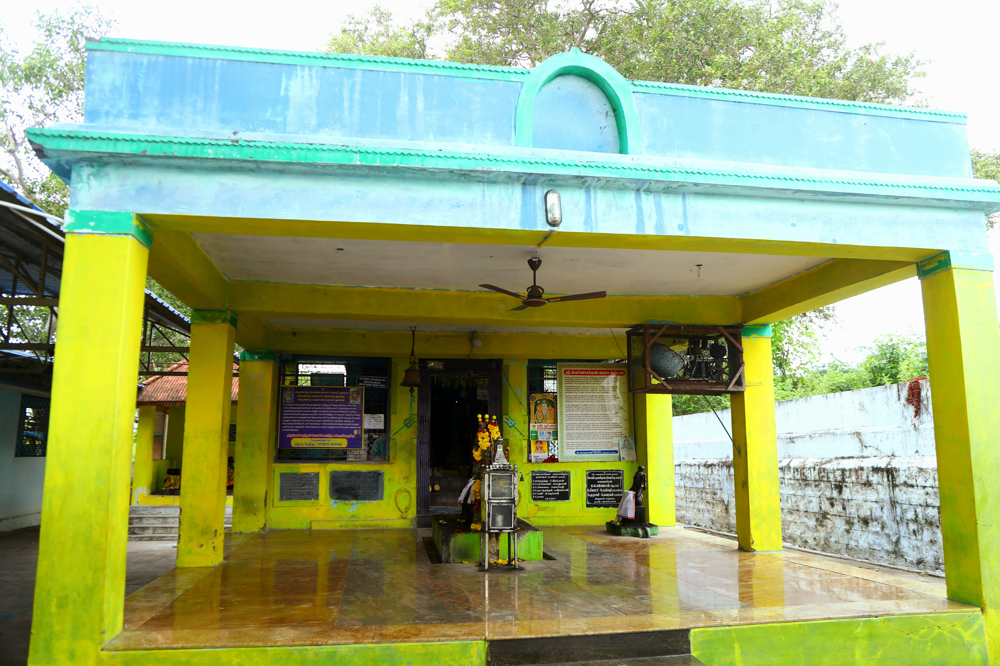
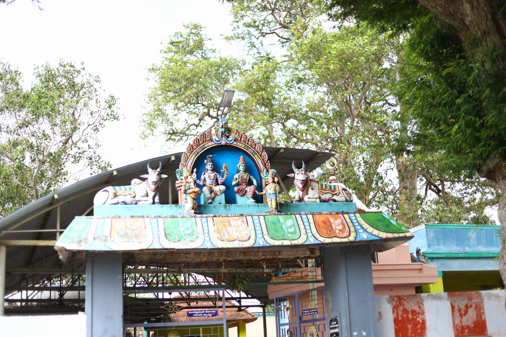
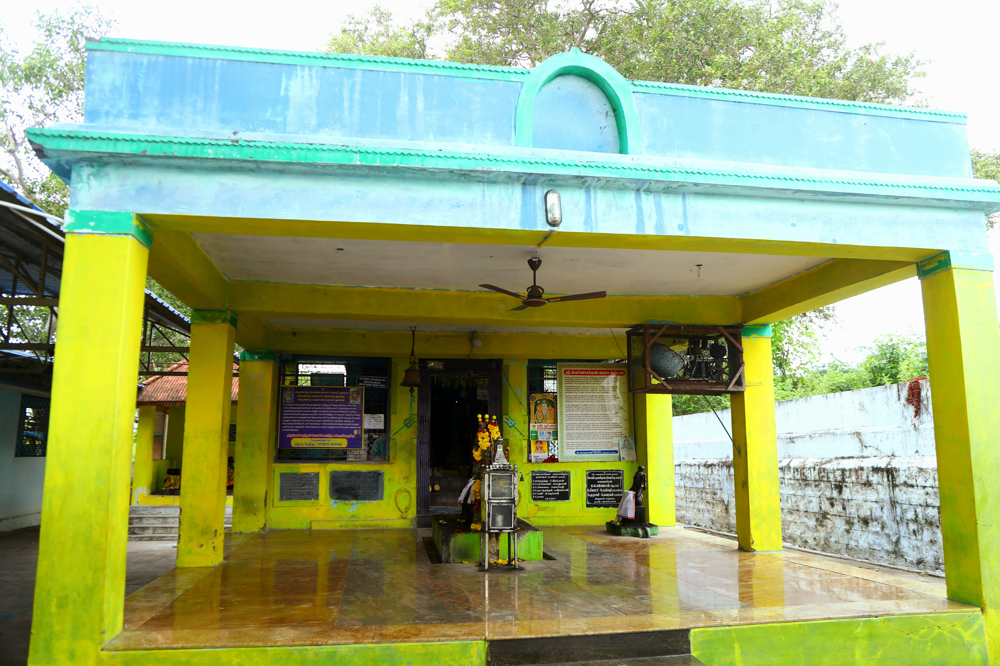
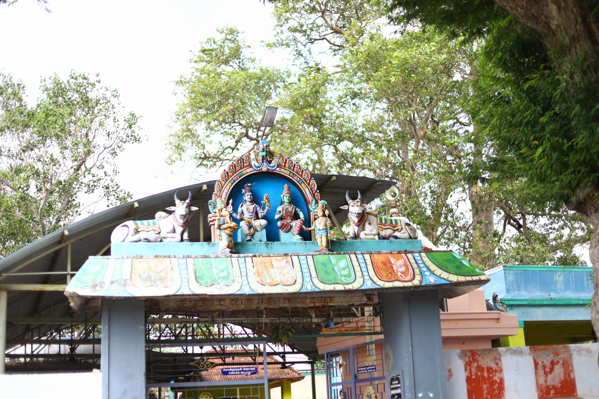
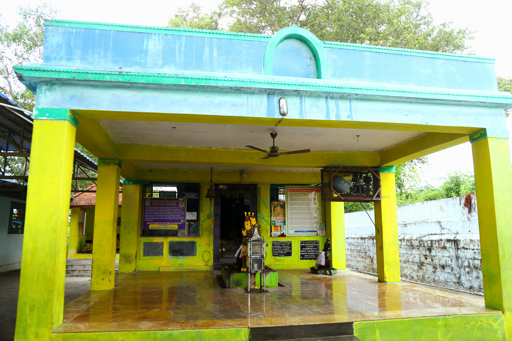
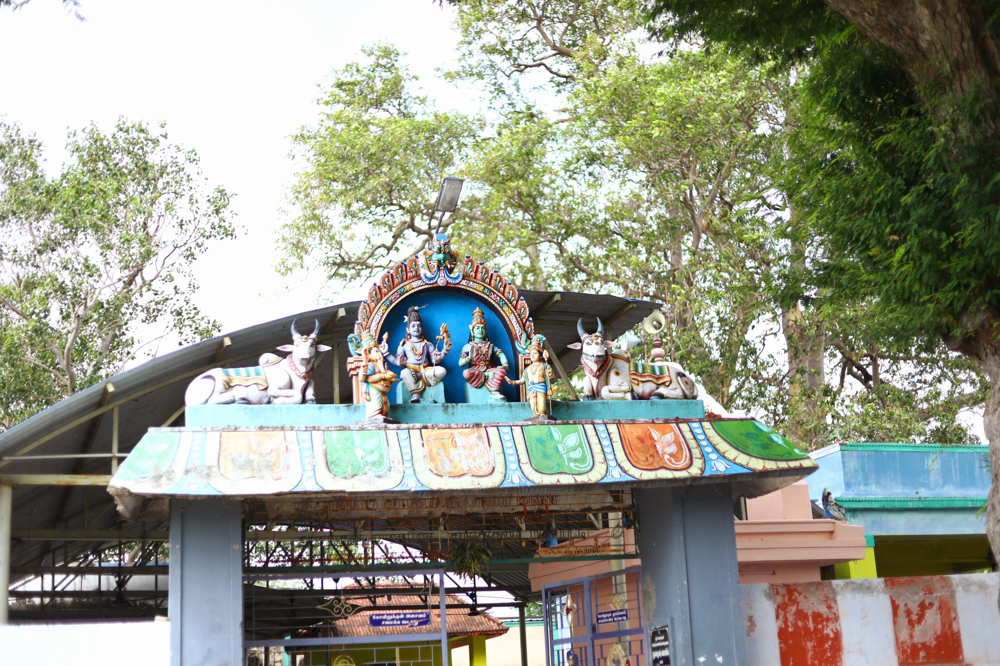

புகைப்படங்கள்
 





விருதுநகரில் உள்ள ஸ்ரீ காலபைரவர் கோவில் மிகவும் பிரசித்தி பெற்றது இந்தியாவில் உள்ள மாவட்டம் சுற்றியுள்ள பகுதிகள், விருதுநகர் வி.நாங்கூர் காலபைரவர் கோவில் தமிழக இந்து மதத்தின் கீழ் வருகிறது திணை..காலபைரவா ஒரு இந்து தெய்வம், அடிக்கடி தொடர்புடையது சிவபெருமானின் உக்கிரமான அம்சங்கள். காலபைரவர் கருதப்படுகிறார் காசியின் (வாரணாசி) காவல் தெய்வம், அவர் தான் என்று நம்பப்படுகிறது நகரத்திற்கு தலைமை தாங்குபவர்.... ஸ்ரீ காலபைரவர் கோவில் மிக அதிகம் இந்தியாவிலேயே விருதுநகர் மாவட்டம் சுற்றுவட்டாரத்தில் உள்ள புகழ்பெற்ற கோவில், விருதுநகர் வி.நாங்கூர் காலபைரவர் கோவில் தமிழகத்தின் கீழ் வருகிறது இந்து சமயத் துறை..காலபைரவர் ஒரு இந்துக் கடவுள், அடிக்கடி சிவபெருமானின் கடுமையான அம்சங்களுடன் தொடர்புடையது. காலபைரவா ஆவார் காசியின் (வாரணாசி) காவல் தெய்வமாகக் கருதப்படுகிறது, மேலும் அவர் நகரத்தின் தலைவராக இருப்பவர் என்று நம்பப்படுகிறது.

